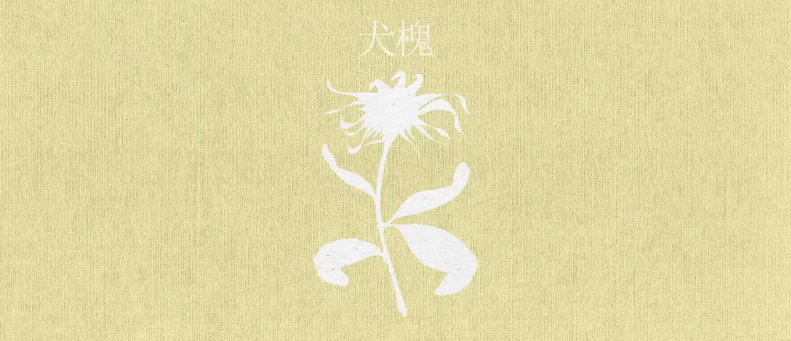

「flos」の花々
ここから花の超簡易的な説明と花言葉が記載されております。
どうぞごゆるりとお過ごしください。
Daphne

説明
ジンチョウゲ科ジンチョウゲ属の花で学名は「Daphne odora」
花言葉
「栄光」「不滅」「永遠」などFicus

説明
クワ科イチジク属の花で学名は「Ficus carica」
花言葉
「多産」「豊富」「裕福」などIris

説明
アヤメ科アイリス属の花で学名は「Iris germania」
花言葉
「優雅」「朗報」「希望」などMaackia


説明
マメ科イヌエンジュ属の花で学名は「Maackia amurensis」
花言葉
「上品」「幸福」「慕情」などLythrum

説明
ミソハギ科ミソハギ属の花で学名は「Lythrum anceps」
花言葉
「悲哀」「慈悲」「純情な愛情」などMyrica

説明
ヤマモモ科ヤマモモ属の花で学名は「Myrica rubra」
花言葉
「一途」「教訓」「ただ一人を愛する」などSabia

説明
アワブキ科アオカズラ属の花で学名は「Sabia japonica」
花言葉
「快活」「活力」「努力」などThymus

説明
シソ科イブキジャコウソウ属の花で学名は「Thymus quinquecostatus」
花言葉
「勇気」「神聖」「潔癖症」などRibes

説明
スグリ科スグリ属の花で学名は「Ribes sinanense」
花言葉
「あなたの不機嫌が私を苦しめる」「あなたを喜ばせる」「感謝の気持ち」などAberia

説明
スイカズラ科ツクバネウツギ属の花で学名は「Abelia spathulata」
花言葉
「強運」「謙虚」「謙譲」などSedum

説明
ベンケイソウ科キリンソウ属の花で学名は「Sedum aizoon」
花言葉
「警戒」「予防」「用心」などFelicia

説明
キク科フェリシア属の花で学名は「Felicia heterophylla」
花言葉
「幸福」「無邪気」「純粋」などOchna

説明
オクナ科オクナ属の花で学名は「Ochna serrulata」
花言葉
「陽気」「快活」「心躍る」などLychnis

説明
ナデシコ科センノウ属の花で学名は「Lychnis senno」